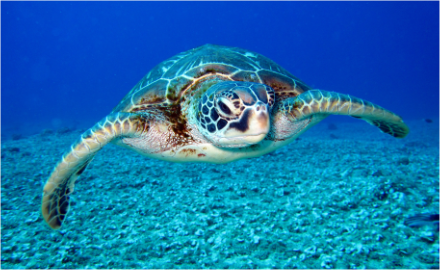

한국해양재단 korea ocean foundation
무한한 잠재력과 가능성으로
하늘만큼 높고 육지보다 넓은 곳
해양은 우리의 미래
해양 참여 행사
-

해안누리길
걷기여행을 좋아하는 분들과 바다를 찾는 분들을 위해 한국해양재단이 전국 해안을 U자로 연결하고자 선정한 '걷기 좋은 해안길'의 이름입니다.
-

해양문화 대장정
한국해양재단은 차세대 주역인 대학생들의 해양문화와 해양영토 의식 함양을 위한 2022년 해양문화 대장정을 진행합니다.
-

지난 유적지 답사 보기
장보고 해양 개척정신과 우리 선조들의 독립 의지를 국민에게 널리 알리기 위해 추진하는 ‘2019년 해양유적지 및 상해임시정부 답사’에 참가하실
-

해양교육관계자 워크숍
서울특별시교육청 특수분야연수기관 운영지침에 따름 - 매 시간 출석체크 후 출석률 80% 이상 수강시 이수 인정
-

해양교육 동아리
해양 관련 동아리 활동 지원을 통해 해양교육 활성화와 해양인재를 발굴·육성하고, 해양수산 분야에 대한 관심 제고
-
더보기
-
2022-07-19
제17회 대한민국 해양사진대전 본심 진출 예정작 공고 및 공개검증 안내
한국해양재단과 해양환경공단은 사진을 통해 우리 바다의 아름다움과 의미를 알리고, 해양 에 대한 국민적인 관심을 유도하기 위한『제17회 대한민국 해양사진대전』을 개최하였으며, 큰 호응 속에 다양한 작품이 응모되었습니다 .
View more -
2022-08-10
2022 우수 해양관광상품 대국민 체험단 추가 모집 공고
우리 재단은 해양레저와 해양관광 산업 발전을 위해 우수 해양관광상품을 선정 지원하고 있습니다. 이와 관련하여 올해 선정된 5개 우수 해양관광상품을 직접 체험하고 개선 및 발전 방안을 모색하기 위한 '우수 해양관광상품 대국민 체험단'을 추가 모집합니다. 체험 상품과 체험단 모집에 관한 자세한 사항은 첨부파일을 확인하시기 바랍니다.
View more -
2022-08-24
제16회 장보고대상 수상 후보자 공모 기한 연장 공고(~9. 7.)
제16회 장보고대상 수상 후보자 공모 기한을 첨부파일과 같이 연장 공고하오니, 공모 내용을 확인하시어, 장보고 개척정신을 계승하여 해양수산 각 분야에서 뚜렷한 성과를 남긴 개인 및 기관 등을 추천하여 주시기 바랍니다.
View more -
2022-08-03
문해남 이사장 인터뷰 방영 안내 - OBS <인사이드스토리>
2022년 8월 7일 일요일 오후 7시 55분, OBS 경인TV에서 한국해양재단 문해남 이사장의 바다에 대한 깊은 이야기를 나누는 시간이 준비되어 있습니다.많은 시청 바랍니다. (본) 2022. 8. 7.(일) 19:55 (재) 2022. 8. 8.(월) 11:00
View more -
2022-07-19
2022년 해양문화 대장정 참가자 모집 연장 공고
한국해양재단은 차세대 주역인 대학생들의 해양문화와 해양영토 의식 함양을 위한 2022년 해양문화 대장정 참가자 모집 연장을 첨부와 같이 진행합니다. 패기와 열정이 넘치는 대학생 여러분들의 많은 참여를 바랍니다.
View more
-
2022-07-19
-
더보기
-
2022-07-18
한국해양재단-한국수산회, '해양수산 정보교류 및 해양수산 교육·문화 활성화' 업무협약 체결
(재)한국해양재단(이사장 문해남)은 우리나라 수산업의 발전과 권익향상을 통해 수산업의 푸른 미래를 열어가는 한국수산회(회장 정영훈)와 해양수산 정보교류 및 해양수산 교육·문화 활성화를 위한 업무협약을 2022년 7월 12일 체결하였다.
View more -
2022-06-24
모여라! 바다 꿈나무들 “2022년도 청소년 해양인재학교” 참가자 모집
해양수산부(장관 조승환)와 한국해양재단(이사장 문해남)은 6월 24일(금)부터 7월 11일(월)까지 청소년(만13~16세)들을 대상으로 “2022년도 청소년 해양인재학교”(이하 인재학교)의 참가자를 모집한다고 밝혔다.
View more -
2022-06-22
바다에서 미래세대의 꿈을 키우다. “2022년도 해양문화 대장정” 참가자 모집
일정은 8월 11일부터 18일까지 7박 8일이며, 참가자들은 서울에서 출발하여 동·서·남해 세 경로로 나누어 전국의 주요 섬과 해안도시를 순례하게 된다. 서해의 백령도와 가거도, 남해의 거문도와 마라도, 동해의 울릉도와 독도 탐방도 예정되어 있어 섬과 해양문화를 체험할 수 있는 특별한 경험도 하게된다.
View more -
2022-06-17
한국해양재단, 어린이 대상 해양환경 보전 전문교육 체험관 '키즈마린파크' 운영
한국해양재단은 15일 오전 10시 문해남 한국해양재단 이사장, 양진모 현대자동차그룹 부사장, 한기준 해양환경공단 이사장, 김경희 사회복지공동모금회 본부장 등 관계자들이 참석한 가운데 ‘키즈마린파크(어린이 해양환경체험관)’ 개관식을 개최하고, 정식 운영을 시작한다고 밝혔다.
View more -
2022-06-16
한국해양재단-국립해양생물자원관, '해양 정보교류 및 해양교육 활성화' 업무협약 체결
이번 협약은 한국해양재단에서 추진하고 있는 해양교육 및 문화 관련 사업을 통해 해양에 대한 학습과 체험, 무궁무진한 해양의 가치를 국립해양생물자원관과 함께 발굴해 나가기 위해 추진하였다.
View more
-
2022-07-18